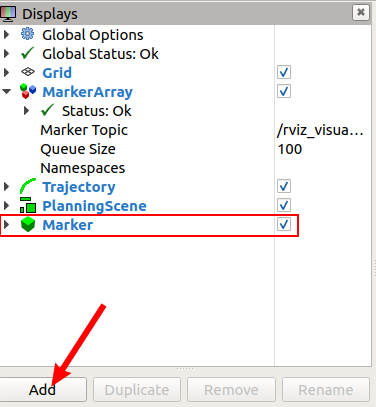
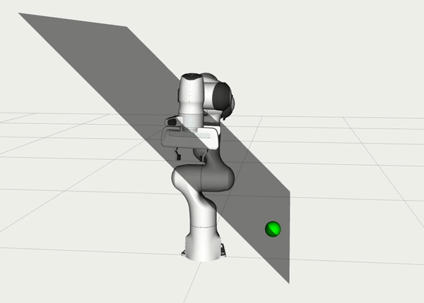
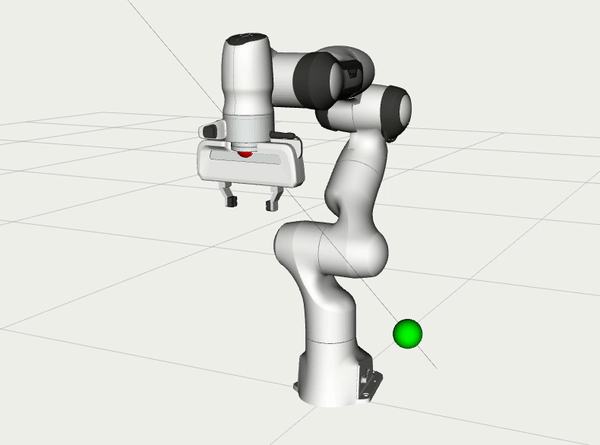
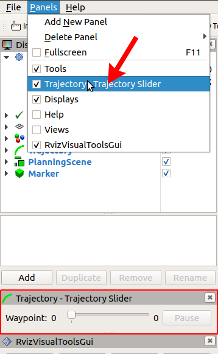

OMPL Constrained Planning

This tutorial shows you how to use OMPL’s Constrained planning capabilities from MoveIt. To illustrate the capabilities of this planner, three planning problems are solved with different types of path constraints. It will be easier to follow if you have read through the tutorial on the move group Python interface.
For a short walkthrough of running the tutorial, you can watch this video.
When can I use this planner?
The interface currently only supports position constraints on any link of the robot, where the constrained regions is represented using a box. The planning approach provides an alternative for the enforce_joint_model_state_space option. It is expected to be most valuable for constraints regions that have a small (or zero) volume in Cartesian space, where the rejection sampling does not always works. For example, keeping the end-effector on a plane or along a line.
Configure OMPL
OMPL reads configurations parameters from a file called ompl_planning.yaml. This tutorial uses the Panda robot, for which this file can be found in panda_moveit_config/config/ompl_planning.yaml. We will add a parameter to tell OMPL to plan in a constrained state space by setting enforce_constrained_state_space. In addition, if the parameter projection_evaluator was not yet specified we also need to add it.
panda_arm:
enforce_constrained_state_space: true
projection_evaluator: joints(panda_joint1,panda_joint2)
Note that, as we are changing configuration files, you should also clone the repository panda_moveit_config in you’re workspace. (Instead of using the version installed with sudo apt install.
cd catkin_ws/src
git clone https://github.com/ros-planning/panda_moveit_config.git
cd ../..
catkin build
Run the tutorial
After you change the configuration as explained in the previous section, launch the move group node for the panda robot:
roslaunch panda_moveit_config demo.launch
Then add a Marker display to Rviz:
{kind=link}
Open a new terminal window to run the tutorial node:
rosrun moveit_tutorials ompl_constrained_planning_tutorial.py
A red and green sphere should appear in Rviz to show the start and goal states respectively. In addition, a grey box should appear that represents the position constraint on the link panda_link8. If planning succeeds, you should see a preview of the trajectory that was planned.
{kind=link}
The following message appears in the terminal:
============ Press enter to continue with the second planning problem.
After pressing enter, the next planning problem is solved.
{kind=link}
Again, if planning succeeds, the trajectory is animated in rviz. And finally the last planning problem is solved after pressing enter again.
{kind=link}
To see the output from the planner, look in the terminal window where you launched the Panda’s move group node. To replay the planned trajectory, you can add a “Trajectory Slider” panel in Rviz.
{kind=link}
The code explained
Setup
Setup a RobotCommander and a MoveGroupCommander, see move group Python interface tutorial for more details. Everything is wrappen in a class to make it easily reusable.
class ConstrainedPlanningTutorial(object):
"""Wrapper class for the tutorial."""
def __init__(self, group_name="panda_arm"):
"""Start the ROS node and create object to handle the robot and the planning scene."""
moveit_commander.roscpp_initialize(sys.argv)
rospy.init_node("ompl_constrained_planning_example", anonymous=True)
self.robot = moveit_commander.RobotCommander()
self.move_group = moveit_commander.MoveGroupCommander(group_name)
self.scene = moveit_commander.PlanningSceneInterface()
# Create a publisher to visualize the position constraints in Rviz
self.marker_publisher = rospy.Publisher(
"/visualization_marker",
visualization_msgs.msg.Marker,
queue_size=20,
)
rospy.sleep(0.5) # publisher needs some time to connect Rviz
self.remove_all_markers()
self.marker_id_counter = 0 # give each marker a unique idea
# Save some commenly used variables in the setup class
self.ref_link = self.move_group.get_pose_reference_frame()
self.ee_link = self.move_group.get_end_effector_link()
self.obstacle_name = "obstacle"
Create a planning problem
Instead of using the current robot state as start state, we use a fixed state for the panda robot defined in the srdf config file.
The get_named_target_values returns a dictionary with joint names and values for the “ready” position.
def create_start_state(self, named_target="ready"):
ready = self.move_group.get_named_target_values(named_target)
# Now create a robot state from these joint positions
joint_state = sensor_msgs.msg.JointState()
joint_state.header.stamp = rospy.Time.now()
joint_state.header.frame_id = self.move_group.get_pose_reference_frame()
joint_state.name = [key for key in ready.keys()]
joint_state.position = [val for val in ready.values()]
state = moveit_msgs.msg.RobotState()
state.joint_state = joint_state
return state
To keep things simple, we use the current end-effector pose to quickly create a reasonable goal. We also visualize the start and goal position of the end-effector in Rviz with a simple sphere. We assume that when the demo.launch file for the panda robot is launched, the robot is in the “ready” position.
def create_pose_goal(self):
self.move_group.clear_pose_targets()
pose = self.move_group.get_current_pose()
self.display_sphere(pose.pose, color=COLOR_RED)
pose.pose.position.y += 0.3
pose.pose.position.z -= 0.3
self.display_sphere(pose.pose)
return pose
For the second planning problem with the tilted plane, we need to create a pose goal that lies in this plane. The plane is tilted by 45 degrees, so moving an equal amount in the y and z direction should be ok.
def create_pose_goal_in_plane(self):
self.move_group.clear_pose_targets()
pose = self.move_group.get_current_pose()
self.display_sphere(pose.pose, color=COLOR_RED)
pose.pose.position.x += 0.2
pose.pose.position.y += 0.3
pose.pose.position.z -= 0.3
self.display_sphere(pose.pose)
return pose
Create position constraints
First we create simple box constraints on the current end-effector link (self.ee_link = "panda_link8").
def create_simple_box_constraints(self):
pcm = moveit_msgs.msg.PositionConstraint()
pcm.header.frame_id = self.ref_link
pcm.link_name = self.ee_link
cbox = shape_msgs.msg.SolidPrimitive()
cbox.type = shape_msgs.msg.SolidPrimitive.BOX
cbox.dimensions = [0.1, 0.4, 0.4]
pcm.constraint_region.primitives.append(cbox)
current_pose = self.move_group.get_current_pose()
cbox_pose = geometry_msgs.msg.Pose()
cbox_pose.position.x = current_pose.pose.position.x
cbox_pose.position.y = 0.15
cbox_pose.position.z = 0.45
cbox_pose.orientation.w = 1.0
pcm.constraint_region.primitive_poses.append(cbox_pose)
# display the constraints in rviz
self.display_box(cbox_pose, cbox.dimensions)
return pcm
If you make a box really thin along one dimension, you get something plane like.
We create a plane perpendicular to the y-axis and tilt it by 45 degrees in the function below.
When solving the problem, you can tell the planner to model this really thin box as an equality constraint.
The magic number 0.0005 is explained later.
def create_plane_constraints(self):
pcm = moveit_msgs.msg.PositionConstraint()
pcm.header.frame_id = self.ref_link
pcm.link_name = self.ee_link
cbox = shape_msgs.msg.SolidPrimitive()
cbox.type = shape_msgs.msg.SolidPrimitive.BOX
cbox.dimensions = [1.0, 0.0005, 1.0]
pcm.constraint_region.primitives.append(cbox)
current_pose = self.move_group.get_current_pose()
cbox_pose = geometry_msgs.msg.Pose()
cbox_pose.position.x = current_pose.pose.position.x
cbox_pose.position.y = current_pose.pose.position.y
cbox_pose.position.z = current_pose.pose.position.z
# turn the constraint region 45 degrees around the x-axis.
quat = quaternion_from_euler(pi / 4, 0, 0)
cbox_pose.orientation.x = quat[0]
cbox_pose.orientation.y = quat[1]
cbox_pose.orientation.z = quat[2]
cbox_pose.orientation.w = quat[3]
pcm.constraint_region.primitive_poses.append(cbox_pose)
# display the constraints in rviz
self.display_box(cbox_pose, cbox.dimensions)
return pcm
Building on the previous constraint, we can make it a line, by also reducing the dimension of the box in the x-direction.
def create_line_constraints(self):
pcm = moveit_msgs.msg.PositionConstraint()
pcm.header.frame_id = self.ref_link
pcm.link_name = self.ee_link
cbox = shape_msgs.msg.SolidPrimitive()
cbox.type = shape_msgs.msg.SolidPrimitive.BOX
cbox.dimensions = [0.0005, 0.0005, 1.0]
pcm.constraint_region.primitives.append(cbox)
current_pose = self.move_group.get_current_pose()
cbox_pose = geometry_msgs.msg.Pose()
cbox_pose.position.x = current_pose.pose.position.x
cbox_pose.position.y = current_pose.pose.position.y
cbox_pose.position.z = current_pose.pose.position.z
quat = quaternion_from_euler(pi / 4, 0, 0)
cbox_pose.orientation.x = quat[0]
cbox_pose.orientation.y = quat[1]
cbox_pose.orientation.z = quat[2]
cbox_pose.orientation.w = quat[3]
pcm.constraint_region.primitive_poses.append(cbox_pose)
# display the constraints in rviz
self.display_box(cbox_pose, cbox.dimensions)
return pcm
Finally, solve a planning problem!
Now we can use the different pieces we just defined to solve some planning problems.
# First create an instance of the Tutorial class
tutorial = ConstrainedPlanningTutorial()
# Copy move group variable for readability
move_group = tutorial.move_group
Create the first planning problem
start_state = tutorial.create_start_state()
pose_goal = tutorial.create_pose_goal()
# Let's try the simple box constraints first!
pcm = tutorial.create_simple_box_constraints()
# We need two wrap the constraints in a generic `Constraints` message.
path_constraints = moveit_msgs.msg.Constraints()
path_constraints.position_constraints.append(pcm)
# Now we have everything we need to configure and solve a planning problem
move_group.set_start_state(start_state)
move_group.set_pose_target(pose_goal)
# Don't forget the path constraints! That's the whole point of this tutorial.
move_group.set_path_constraints(path_constraints)
# And let the planner find a solution.
# The move_group node should automatically visualize the solution in Rviz if a path is found.
move_group.plan()
# Clear the path constraints for our next experiment
move_group.clear_path_constraints()
# Now wait for the user (you) to press enter before doing trying the position constraints.
print("============ Press enter to continue with the second planning problem.")
input()
# remove all markers in Rviz before starting the next tutorial
tutorial.remove_all_markers()
In the second problem we plan with the end-effector constrained to a plane. Remember we created a special pose goal that lies in the constraint plane. We did that because any goal or start state should also satisfy the path constraints.
Solving the problem using equality constraints is a bit more complicated. (Or should I say, hacky?)
We need to tell the planner explicitly that we want to use equality constraints for the small dimensions.
This is achieved by setting the name of the constraint to "use_equality_constraints".
In addition, any dimension of the box below a threshold of 0.001 will be considered an equality constraint.
However, if we make it too small, the box will be thinner that the tolerance used by OMPL to evaluate constraints (1e-4 by default).
MoveIt will use the stricter tolerance (the box width) to check the constraints, and many states will appear invalid.
That’s where the magic number 0.0005 comes from, it is between 0.00001 and 0.001.
pose_goal = tutorial.create_pose_goal_in_plane()
pcm = tutorial.create_plane_constraints() # this function uses the 'magic' number
path_constraints = moveit_msgs.msg.Constraints()
path_constraints.position_constraints.append(pcm)
path_constraints.name = "use_equality_constraints"
# And again, configure and solve the planning problem.
move_group.set_start_state(start_state)
move_group.set_pose_target(pose_goal)
move_group.set_path_constraints(path_constraints)
move_group.plan()
move_group.clear_path_constraints()
print("============ Press enter to continue with the second planning problem.")
input()
tutorial.remove_all_markers()
Finally we can also plan along the line.
pose_goal = tutorial.create_pose_goal()
pcm = tutorial.create_line_constraints()
path_constraints = moveit_msgs.msg.Constraints()
path_constraints.position_constraints.append(pcm)
path_constraints.name = "use_equality_constraints"
move_group.set_start_state(start_state)
move_group.set_pose_target(pose_goal)
move_group.set_path_constraints(path_constraints)
move_group.plan()
move_group.clear_path_constraints()
print("Done!")